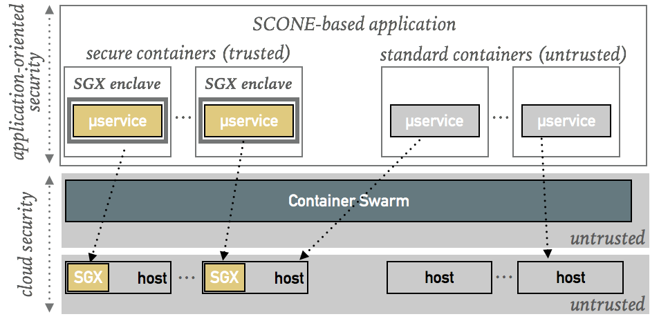
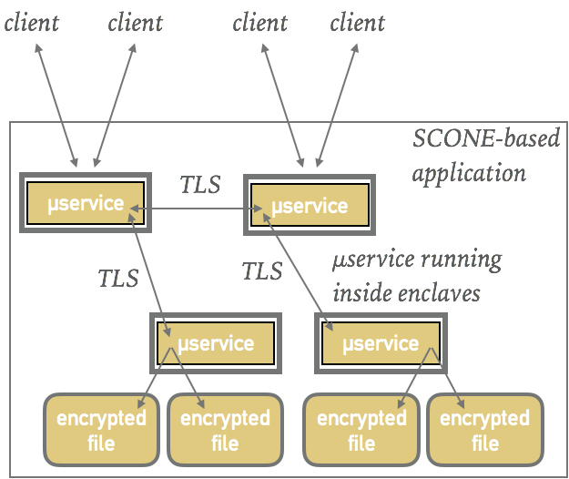
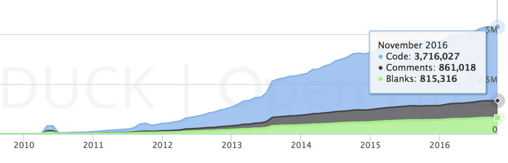
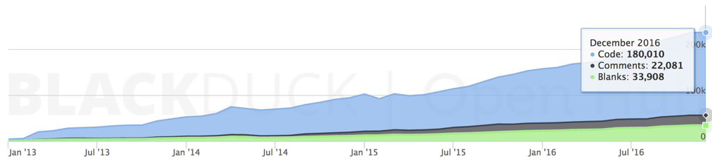

SCONE Background¶
- Cloud Security. The objective of SCONE is to help service providers to build secure applications for public, private or hybrid clouds. This means that the focus of SCONE is on application-oriented security and not on the security of the underlying cloud system. Of course, SCONE-based applications benefit from strong security properties of the underlying cloud because this minimizes, for example, the attack surface of SCONE-based applications and by providing higher availability. SCONE helps to ensure the security of an application, i.e., the application's integrity and confidentiality, even if the security of the underlying cloud or system software would be compromised. The security of applications is ensured with the help of Intel SGX enclaves.

- Workflow. SCONE combines strong security with the ease of use of Docker. SCONE supports a workflow very similar to that of Docker. It supports the construction of applications consisting of multiple containers while ensuring end-to-end encryption between all application components in the sense that all network traffic, all files and even all computation is encrypted. A service provider can ensure the confidentiality and integrity of all application data. In particular, SCONE supports the construction of applications such that no higher privileged software like the operating system or the hypervisor, nor any system administrator with root access nor cold boot attacks can gain access to application data.

- Side Channel Attacks. Side Channel attacks on Intel SGX are the focus of a several recent research papers. First, mounting a successful side-channels is much more difficult than just dumping the memory of an existing application. In SCONE, we provide scheduling within enclaves which makes it more difficult for an attacker to determine which core is executing what function. Moreover, we are working on a compiler extension that will harden applications against side channel attacks. Until will release this extension, a pragmatic solution would be to run applications that might be susceptible to side channel attacks either on OpenStack isolated hosts or on OpenStack baremetal clouds.
Problem: Defender's Dilemma¶
Traditionally, one ensures the security of an application by ensuring that the system software, i.e., the hypervisor, operating system and cloud software is trustworthy. This not only protects the integrity and confidentiality of the system data but also protects the security of the applications. A service provider running applications in the cloud must trust all system software and also all administrators who have root or physical access to these systems.
A popular way to intrude into a system is to steal the credentials of a system administrator. With these root credentials, one gains access to all data being processed in this system as well as all keys that are kept in main memory or in some plain text files. If stealing credentials would be too difficult, an attacker will look for other ways to attack a system, like, exploiting known code vulnerabilities.
For an attacker, it might be sufficient to exploit a single vulnerability in either the application or the system software to violate the application security. The problem is that the defenders must protect against the exploitation of all code vulnerabilities that might exist in the source code. A service provider might not have access to all source code of the system software that the cloud provider uses to operate the cloud. Even if the source code were available, this will typically be too large to be inspected.
To show that this is a difficult problem, let's look at the number of lines of source code of common system software components. While lines of source code is not an ideal indicator for the number of vulnerabilities, it gives some indication of the problem we are facing. Some security researchers state that given the current state of the art, only code with up to 10,000s of lines of code can be reasonably inspected. Just the system software itself contains millions of lines of code. This is orders of magnitudes more than we can reasonably expect to be able to inspect.
SCONE runs on top of Linux - which contains millions of lines of code and is still growing in size with each release:
 Linux Lines of Code (StefanPohl, CC0, original}
Linux Lines of Code (StefanPohl, CC0, original}
OpenStack is a popular open source software to manage clouds. OpenStack - despite being relatively young - has been growing dramatically over the years that it has already reached 5 million lines of code (including comments and blank lines):
 OpenStack Lines of Code (OpenHub original)
To manage containers, we need an engine like Docker. Docker is younger than OpenStack but has nevertheless reached already more than 180,000 lines of code:
 Docker Lines of Code (OpenHub original)
Code complexity.There is no one-to-one correlation between lines of codes and bugs. Static analysis of open source code repositories indicates approximately 0.61 defects per 1,000 LOC. A recent analysis of Linux shows that, despite an increasing number of defects being fixed, there are always approximately 5,000 defects waiting to be fixed. Not all of these defects can, however, be exploited for security attacks. Another analysis found that approximately 500 security-relevant bugs were fixed in Linux over the past five years - bugs that had been in the kernel for five years before being discovered and fixed. Commercial code had a slightly higher defect density than open source projects. Hence, we need to expect vulnerabilities in commercial software too.
SCONE Approach¶
The approach of SCONE is to partition the code and to place essential components of an application into separate enclaves. Practically, it is quite difficult to split an existing code base of a single process into one component that runs inside an enclave and a component that runs outside of an enclave. However, many modern applications - like cloud-native applications - are already partitioned in several components running in separate address spaces. These components are typically called microservices. This partitioning facilitates a more intelligent scaling of services as well as a scaling of the development team.
A large application might consist of a variety of microservices. Not all microservices of an application need to run inside enclaves to protect the application’s integrity and confidentiality. For example, some services might only process encrypted data, like encrypted log data, and do not need to run inside enclaves. Also, the resource manager does not need to run in an enclave either. However, we recommend that each microservice that has the credential to send requests to at least one microservice running inside an enclave, should itself also run inside of an enclave to restrict the access to enclaved microservices.
Current SGX-capable CPUs have a limited EPC (Extended Page Cache) size. If the working set of a microservice does not fit inside the EPC, overheads can become high. The usage of microservices supports horizontal scalability. This helps to cope with limited EPC (extended page cache) by spreading secure microservices across different hosts.
© scontain.com, March 2018. Questions or Suggestions?